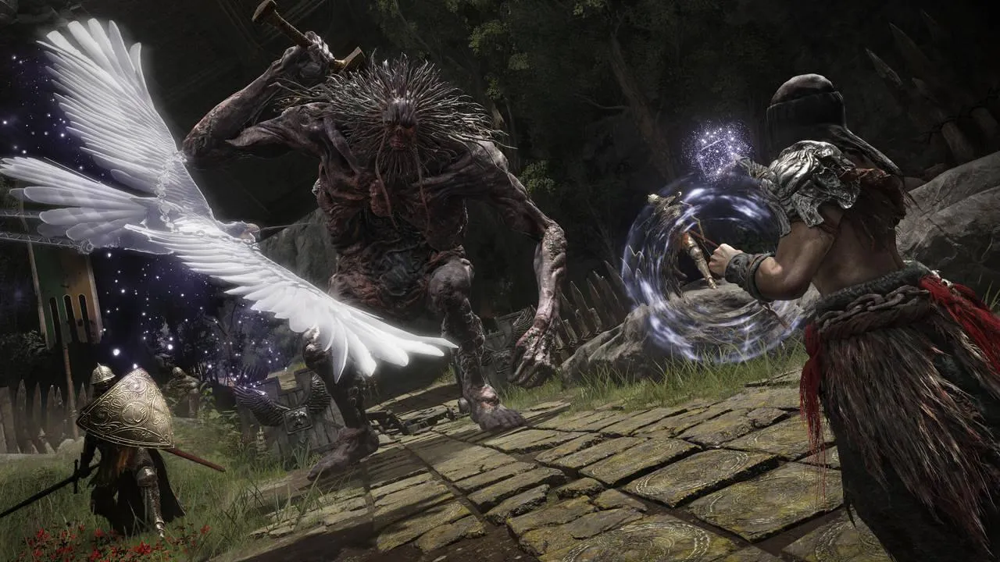

Novedades del mundo gamer
De los creadores de Dark souls, Elden ring sale a la luz en 2022!
En el video se muestra como será el mundo, algunos personajes, su jugabilidad y guiños a los Dark Souls Saldrá el 22 de enero de 2022 para PlayStation 4, PlayStation 5, Xbox Series X/S, Xbox One y PC. Elden Ring comenzó su desarrollo a principios de 2017 tras el lanzamiento del último paquete de contenido descargable de Dark Souls III, The Ringed City. Al igual que con los juegos de Dark Souls que Miyazaki había dirigido anteriormente, Elden Ring se centrará en la fantasía oscura y tendrá la posibilidad de que los jugadores creen sus propios personajes personalizados en lugar de jugar como un protagonista fijo.Miyazaki también consideró Elden Ring como una "evolución natural" de la serie Dark Souls, ya que el juego será mucho más grande en escala que ellos, con un mundo abierto con nuevas mecánicas de juego como la equitación y la capacidad de combatir a los enemigos montados. Sin embargo, a diferencia de muchos otros juegos del mundo abierto, Elden Ring no contará con ciudades pobladas con muchos personajes no jugables, sino que el mundo tendrá numerosas ruinas similares a mazmorras en su lugar.
Cabe mencionar que Elden Ring contará con multijugador online para hasta 4 jugadores
Entre las novedades del juego, hemos sabido que incluirá también una modalidad multijugador para hasta 4 jugadores. En un comunicado de prensa, tras el debut del nuevo avance de Elden Ring y el anuncio de su fecha de lanzamiento, FromSoftware menciona la inclusión de un modo multijugador online. De esta manera, el estudio capitaneado por Hidetaka Miyazaki sostiene que los jugadores "podrían atravesar el mundo a pie o a caballo, solos o en línea con amigos, a través de llanuras cubiertas de hierba, pantanos sofocantes y bosques frondosos". Otro punto interesante es que Elden Ring expandirá su universo por otros medios más allá del mundo de los videojuegos. Así lo indicaba el CEO de Bandai Namco, Yasuo Miyakawa: "Continuaremos desarrollando Elden Ring no sólo como un juego, sino también en una variedad de otras áreas con el fin de ofrecer la cosmovisión y el encanto de este título a nuestros fans de todo el mundo". Podríamos esperar libros, cómics, series de televisión o incluso largometraje.
En este ENLACE podran ver mas informacion sobre la entrevista con Hidetaka Miyazaki , el actual presidente de la compañía de videojuegos From Software